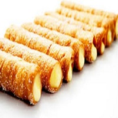
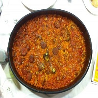
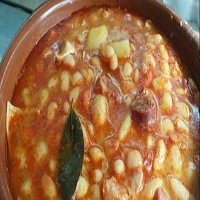
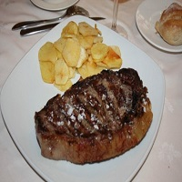

Un poco de gastronomía
La gastronomía en Zamora es bastante variada,pasando desde embutidos tales como chorizo, caña de lomo, salchichon o su famoso queso, hasta guisos como los callos con pata y patata, el arroz a la zamorana,el cocido, la oreja,etc. Es parada obligatoria la zona de pinchos conocida como "Los Lobos"". No nos podemos olvidar de las carnes,siendo ampliamente conocidad la ternera de aliste, o platos típicos en determinadas fechas como son la "Sanantonada", el "Dos y pingada" y las Sopas de ajo. Para poner elbroche con el postre podemos degustar las cañas zamoranas o la leche frita.
   